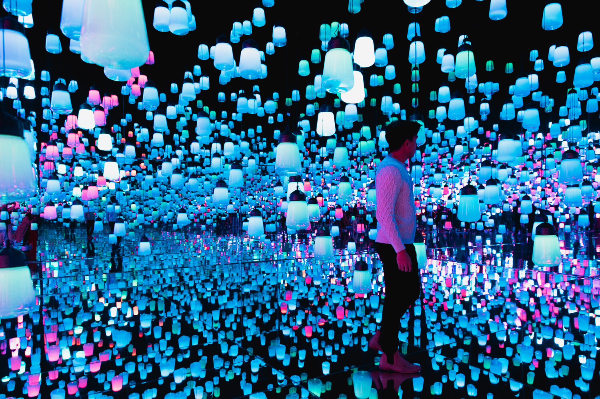
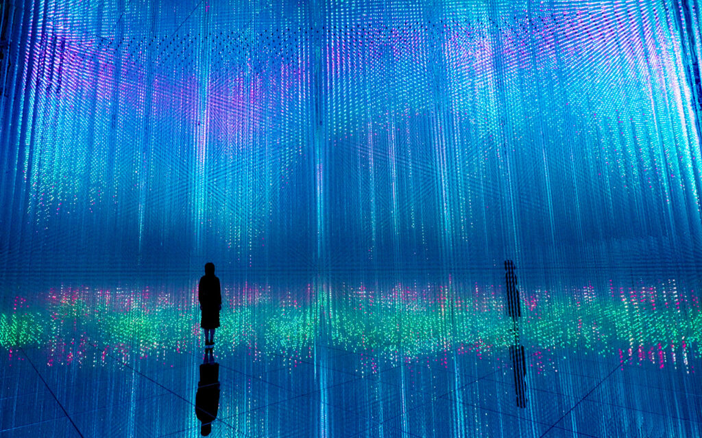
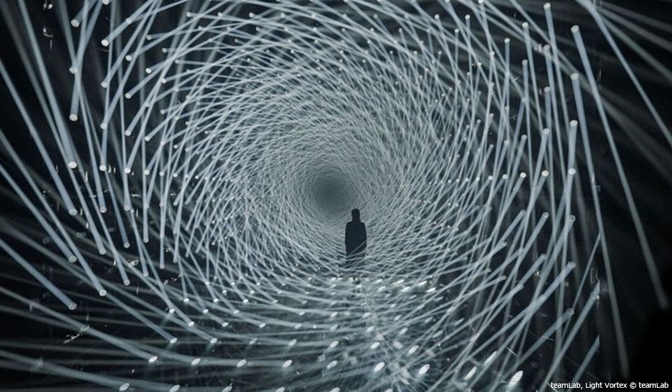

Jour 6 : Journée Culturelle
Programme de la journée
- Musée national de Tokyo
- Teamlab Borderless
Sites Culturels
Musée national de Tokyo
- Exploration de l'histoire et de la culture japonaise
- Prix : 1000Yens / personnes
Total : 15 000Yens (~93,75euros)
Teamlab Borderless
- Musée d'art numérique immersif
- Expérience artistique interactive unique
- Prix : 35€/personnes
total : 525€ (~84 000¥)
Photo des différentes illusion présente sur place :



PS : Retour en France à 17h45 😒😭 (voir jour 7)
Dépense du jour
Budget de la Journée
Budget total estimé : 702€
Ce budget comprend les visites culturelles et la nourriture.
Budget restant : 9 429,41€ (~1 508 705,6¥)